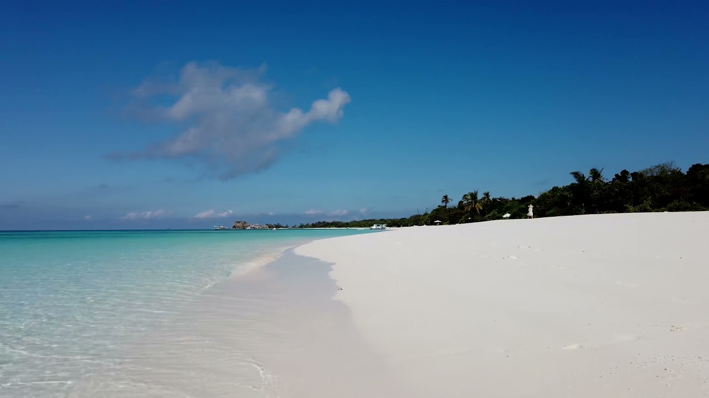
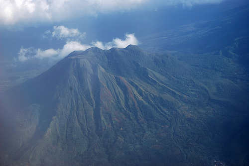
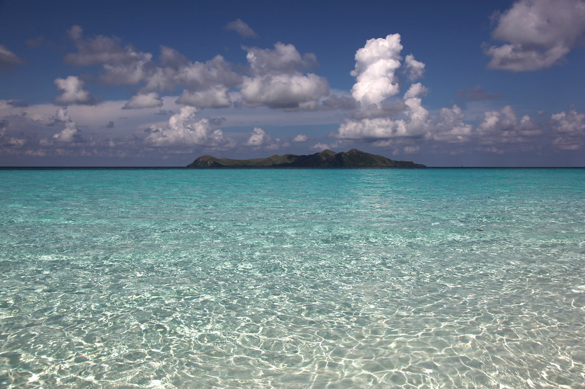
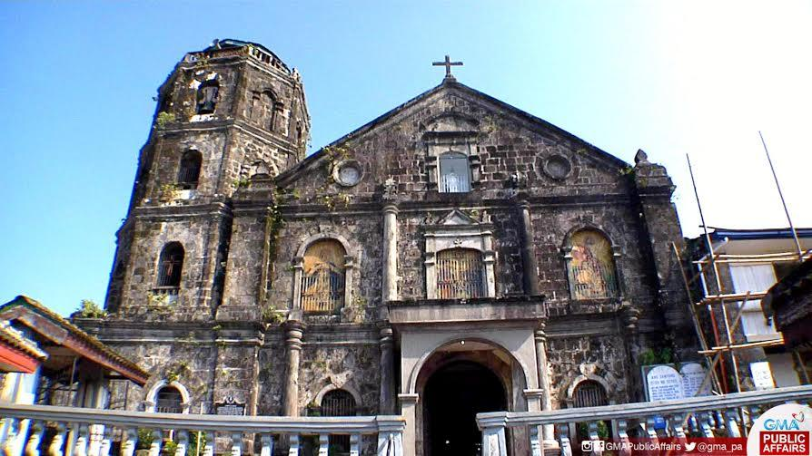

Discover Scenic Destinations
Exploring the Beauty of Laguna and Beyond
Mt. Makiling Views
Mt. Makiling, located in the heart of Laguna, offers breathtaking views and lush greenery. It is a must-visit destination for nature enthusiasts seeking tranquility and adventure. The mountain is home to diverse flora and fauna, making it a sanctuary for wildlife lovers and a perfect escape from the bustling city life.
Whether you are hiking to its summit, exploring its trails, or simply soaking in its serene ambiance, Mt. Makiling promises an unforgettable experience. The views are particularly enchanting during sunrise and sunset, offering photographers and sightseers unparalleled opportunities to capture its natural beauty.
Lake Caliraya
Lake Caliraya is a man-made lake nestled in the highlands of Laguna. It is renowned for its serene waters, lush surroundings, and vibrant water sports activities. Visitors can enjoy kayaking, fishing, or simply lounging by the lakeside. The area is also popular for camping and picnics, offering a peaceful retreat for families and adventurers alike.
 The sunset at Lake Caliraya paints the sky with breathtaking hues, making it a perfect spot for romantic escapes and memorable photographs. Whether you seek relaxation or adventure, Lake Caliraya caters to all.
The sunset at Lake Caliraya paints the sky with breathtaking hues, making it a perfect spot for romantic escapes and memorable photographs. Whether you seek relaxation or adventure, Lake Caliraya caters to all.
Heritage Sites
 Laguna is steeped in history, and its heritage sites offer a glimpse into its rich cultural past. From centuries-old churches to historical landmarks, the province is a treasure trove for history enthusiasts. Guided tours and informational markers help visitors appreciate the stories behind these iconic locations.
Laguna is steeped in history, and its heritage sites offer a glimpse into its rich cultural past. From centuries-old churches to historical landmarks, the province is a treasure trove for history enthusiasts. Guided tours and informational markers help visitors appreciate the stories behind these iconic locations.
Explore the traditional architecture and learn about the significant events that shaped the region. Laguna's heritage sites are not only educational but also inspiring, showcasing the resilience and artistry of its people.
Plan Your Visit
Each destination offers a unique experience, from the natural wonders of Mt. Makiling and Lake Caliraya to the historical charm of Laguna's heritage sites. Embrace the adventure and immerse yourself in the beauty and history of the region. Remember to respect these sites and practice sustainable tourism to ensure they remain pristine for future generations.